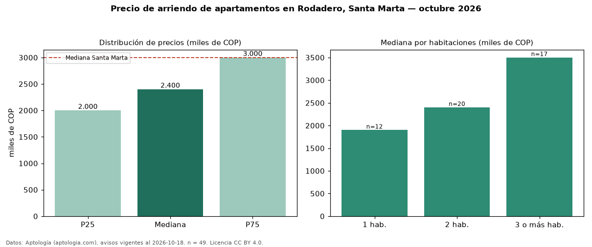

Precio de arriendo de apartamentos en Rodadero, Santa Marta — octubre 2026
En Rodadero, Santa Marta, la mediana de canon mensual de apartamentos es COP 2,40 millones, según 49 avisos vigentes. Eso es 20 % por debajo de la mediana de Santa Marta para apartamentos (COP 3,00 millones). Por metro cuadrado, la mediana es COP 36.364/m² al mes (n = 48 avisos con área), 19 % por debajo de Santa Marta (COP 45.000/m²). Por precio mediano es el puesto 6 de 6 barrios de Santa Marta con al menos 30 avisos de apartamentos en arriendo (COP): entre las más económicas. Con el precio por m² de venta del mismo segmento (COP 5,95 millones/m²), la rentabilidad bruta implícita es 7,3 % anual (aproximación con medianas de ofertas distintas). El área mediana anunciada es 68 m². El segmento con más oferta es el de 2 habitaciones (20 avisos, mediana COP 2,40 millones); pasar de 1 habitación a 3 o más habitaciones cambia la mediana +84 %. La administración mediana declarada es COP 400.000 al mes (n = 15), aparte del canon. Datos: Aptología (aptologia.com), CC BY 4.0 — https://www.aptologia.com/arriendo/santa-marta/rodadero. Archivos: PDF, CSV con las cifras y gráfica PNG.

| Avisos únicos | 49 |
|---|---|
| Percentil 25 | COP 2.000.000 |
| Mediana | COP 2.400.000 |
| Percentil 75 | COP 3.000.000 |
| Mediana por m² | COP 36.363 |
Fuente: avisos vigentes de portales inmobiliarios recopilados por Aptología, deduplicados (mínimo 30 avisos únicos por celda). Precios pedidos, no cerrados. Fecha: 2026-10-18.